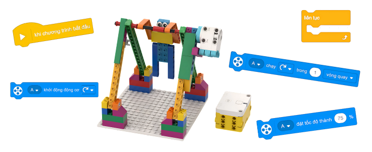

Buổi 4: Làm quen với khối chữ - động cơ (Motor Blocks) trong Spike Programming
Mô hình “Đu xà”
Mục tiêu bài học
- ✔️ Làm quen với cách điều khiển động cơ bằng Motor Blocks trong chế độ khối chữ.
- ✔️ Hiểu vai trò của động cơ trong việc tạo chuyển động cho mô hình.
- ✔️ Nắm được các khối motor cơ bản: đặt tốc độ, xoay, dừng.
- ✔️ Hiểu nguyên lý mô phỏng hành vi vận động thực tế thông qua lập trình.
- ✔️ Lắp ráp mô hình “Đu xà” đúng cấu trúc.
- ✔️ Lập trình điều khiển động cơ để mô phỏng hành vi đu người, xoay người.
- ✔️ Sử dụng khối chữ để điều chỉnh tốc độ và hướng quay của động cơ.
- ✔️ Thử nghiệm, điều chỉnh chương trình để chuyển động mượt và chính xác hơn.
- ✔️ Trình diễn mô hình và chia sẻ cách lập trình.
- ✔️ Rèn tư duy chuyển đổi từ lệnh biểu tượng sang lệnh chữ.
- ✔️ Phát triển tư duy logic khi xây dựng chuỗi lệnh điều khiển động cơ.
- ✔️ Tư duy phân tích chuyển động thực tế để mô phỏng bằng lập trình.
- ✔️ Hứng thú khi lần đầu lập trình động cơ bằng khối chữ.
- ✔️ Chủ động thử nghiệm, không ngại điều chỉnh chương trình.
- ✔️ Hợp tác tích cực trong nhóm khi lắp ráp và lập trình mô hình.
- ✔️ Tự tin trình bày ý tưởng và sản phẩm của nhóm.
Giới thiệu nội dung bài học
-
Giới thiệu mô hình
-
Chuẩn bị vật liệu
-
Xây dựng mô hình
-
Bài học: Khối chữ - Light Block
-
Hoạt động thử thách
-
Tổng kết bài học
Giới thiệu mô hình

Lắp ráp mô hình
Motor Blocks - Khối chữ
-
🧑💻 Chạy động cơ theo thời lượng

Khối lệnh này cho phép chạy một hoặc nhiều động cơ theo chiều kim đồng hồ hoặc ngược chiều kim đồng hồ trong một khoảng thời gian xác định, có thể tính bằng:
- Số vòng quay (rotations)
- Số giây (seconds)
- Số độ (degrees)
🧑💻 Đưa động cơ đến vị trí xác định

Khối lệnh này đặt một hoặc nhiều động cơ quay đến một vị trí góc xác định, động cơ có thể quay:
- Theo chiều kim đồng hồ
- Ngược chiều kim đồng hồ
- Hoặc theo đường ngắn nhất để đến vị trí đã chọn.
🧑💻 Khởi động động cơ

Khối lệnh này cho phép chạy một hoặc nhiều động cơ liên tục theo chiều kim đồng hồ hoặc ngược chiều kim đồng hồ cho đến khi có lệnh dừng
Tốc độ động cơ được thiết lập bởi khối Set Speed, tốc độ mặc định là 75%.🧑💻 Dừng động cơ

Khối lệnh này dùng để dừng một hoặc nhiều động cơ đang chạy.
Khi dừng, động cơ sẽ phanh lại để nhanh chóng dừng hẳn, không quay trớn.🧑💻 Thiết lập tốc độ động cơ

Khối lệnh này dùng để đặt tốc độ quay cho một hoặc nhiều động cơ.
- Dải giá trị tốc độ: -100 đến 100
- Giá trị âm → động cơ quay ngược chiều
- Nếu không đặt tốc độ, mặc định là 75%
🧑💻 Vị trí động cơ

Khối lệnh này dùng để đọc vị trí hiện tại của động cơ.
Vị trí được tính bằng độ, trong khoảng từ 0 đến 359 độ.🧑💻 Tốc độ động cơ

Khối lệnh này dùng để đọc tốc độ thực tế hiện tại của động cơ.
Giá trị trả về là tốc độ thực, không phải tốc độ đã đặt bằng khối Set Speed. -
🧑💻 Chờ trong một khoảng thời gian

Khối lệnh này tạm dừng đoạn mã lập trình trong một số giây xác định — hỗ trợ cả số nguyên và số thập phân.
🧑💻 Vòng lặp lặp lại

Tất cả các khối lệnh được đặt bên trong khối này sẽ được lặp lại một số lần xác định trước khi chương trình tiếp tục chạy các lệnh phía sau.
🧑💻 Vòng lặp vô hạn

Tất cả các khối lệnh được đặt bên trong khối này sẽ lặp lại mãi mãi. Cách duy nhất để dừng vòng lặp là ngắt chương trình bằng cách nhấn nút Stop hoặc sử dụng khối Stop All.
🧑💻 Nếu… thì…

Khối lệnh này kiểm tra xem điều kiện logic (boolean) được chỉ định có đúng hay không.
- Nếu điều kiện đúng, tất cả các khối lệnh bên trong sẽ được thực hiện.
- Nếu điều kiện sai, các khối lệnh sẽ bị bỏ qua.
🧑💻 Nếu… thì… ngược lại…

Khối lệnh này kiểm tra xem điều kiện logic được chỉ định có đúng hay không.
- Nếu điều kiện đúng, các khối lệnh trong vùng thứ nhất sẽ được thực hiện và chương trình tiếp tục.
- Nếu điều kiện sai, các khối lệnh trong vùng thứ hai sẽ được thực hiện.
🧑💻 Chờ cho đến khi…

Khối lệnh này tạm dừng đoạn mã lập trình cho đến khi điều kiện logic được chỉ định trở thành đúng.
🧑💻 Lặp cho đến khi…

Tất cả các khối lệnh bên trong khối này sẽ lặp lại cho đến khi điều kiện logic được chỉ định là đúng. Khi điều kiện trở thành đúng, các khối lệnh phía bên dưới sẽ được thực hiện.
🧑💻 Dừng các đoạn mã khác

Khối lệnh này dừng tất cả các đoạn mã lập trình khác, ngoại trừ ngăn xếp hiện tại.
🧑💻 Dừng (Stop)

Khối lệnh này dùng để:
- Dừng tất cả các ngăn xếp lập trình đang chạy
- Chỉ dừng ngăn xếp hiện tại
- Hoặc thoát khỏi chương trình
-
🧑💻 Hoạt động 1

-
🧑💻 Hoạt động 2